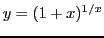
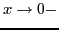
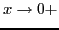
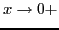
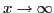
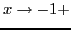
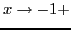
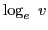
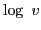
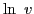

Next: Expressions assuming the form Up: Theory of limits Previous: Show that Contents Index
One of the most important limits in the Calculus is
|
|
-.1 | -.001 | .001 | .01 | .1 | 1 | 5 | 10 | ||
|  | 2.8680 | 2.7195 | 2.7169 | 2.7048 | 2.5937 | 2.0000 | 1.4310 | 1.0096 |
As  from the left,  decreases and approaches as a limit.
As  from the right,
decreases and approaches as a limit.
As  from the right,  increases and also approaches as a limit.
increases and also approaches as a limit.
As
,  approaches the limit
approaches the limit  ; and as  from the right,
; and as  from the right,  increases without limit.
increases without limit.
Natural logarithms are those which have the number for base. These logarithms play a very important rôle in mathematics. When the base is not indicated explicitly, the base is always understood in what follows in this book. Thus  is written simply  or .
Natural logarithms possess the following characteristic property: If  in any way whatever,
in any way whatever,
david joyner 2008-08-11